Saturday: The Park Patrol Ritual
It was an ordinary weekend morning, the kind where Neet and Buddy, the dynamic doggy duo, emerged from their apartment like clockwork. The scent of bacon in the hallways (from Apartment 4C, always teasing) was their cue. With leashes clipped and tails wagging, they trotted down the hall for their Ritual of Supreme Importance: the Perimeter Check™ of Greenwood Park.
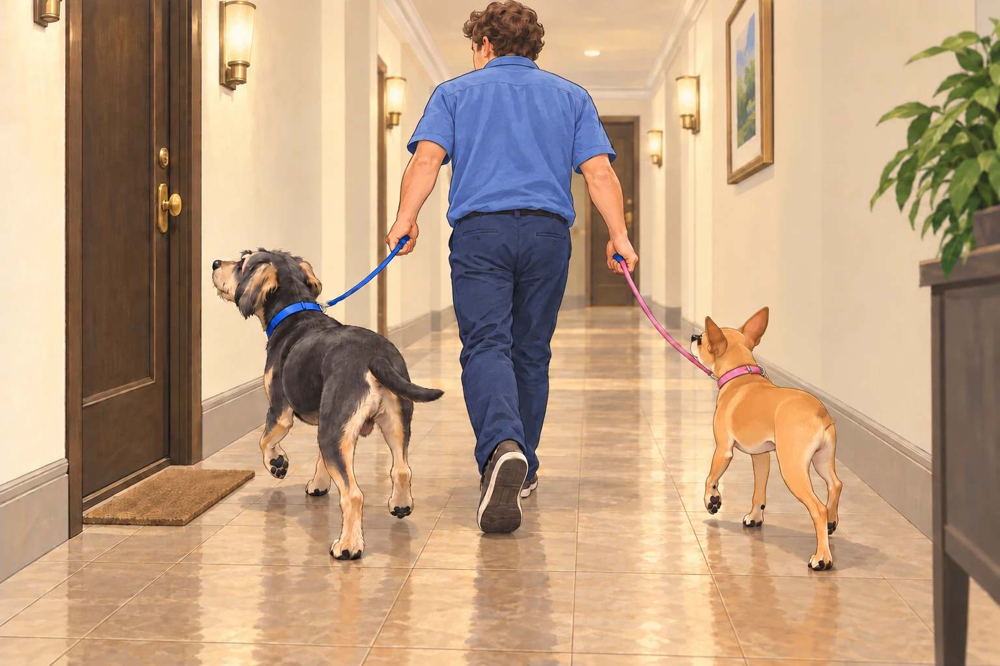
Buddy, the self-appointed park marshal, took the lead, ears perked, nose twitching. Neet followed with her signature sashay— elegant but alert, because you never know when a rogue squirrel might try something sneaky.
As usual, the park was teeming with potential threats: Labradoodles wearing vests that said “Anxiety Dog,” retirees speed-walking like there was an Olympic event for it, and, worst of all, a golden retriever named Riley who had the nerve— the audacity— to exist near their bench.
BARK. BARK. WOOF. Grrr.
Neet and Buddy unleashed their full-volume commentary on the situation, while their human frantically tried to reel them in. Children giggled. Joggers gave them wide berths. All was right in the world.
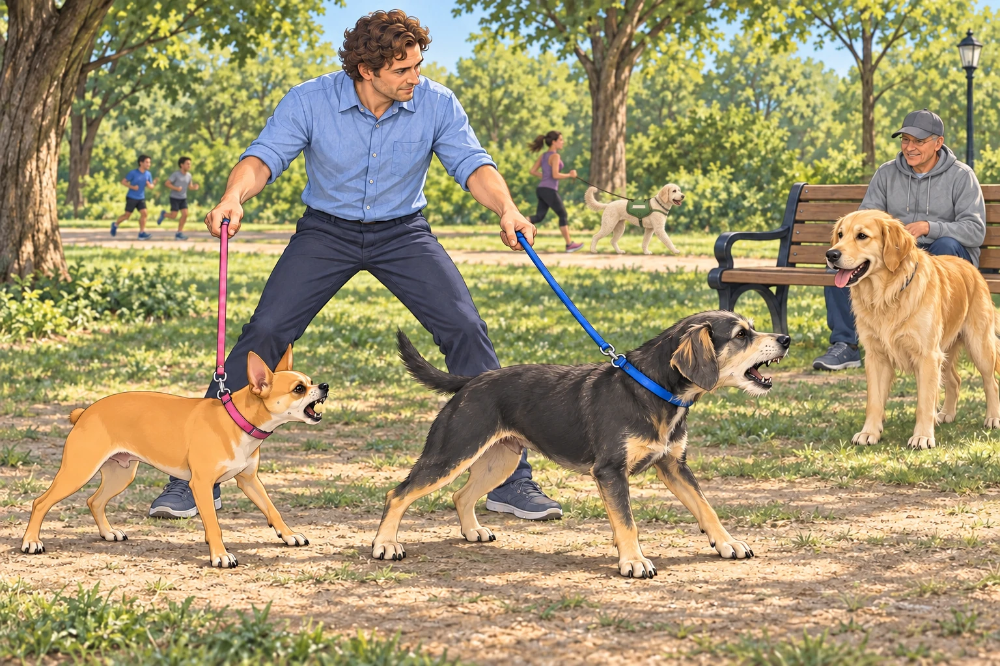
Until Riley sat down on their bench.
Buddy marched toward him. Their human shortened the leash, leaving the park marshal several feet short of his jurisdiction.
Neet hurried over, prepared to defend the bench against occupation. Riley moved aside without being asked. His human sat at the far end; there was space for everybody.
Buddy sniffed beneath the bench, found yesterday's excellent smell still present and settled beside Neet.
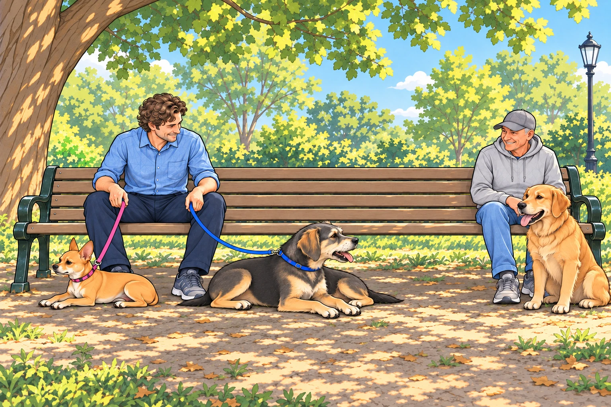
“Successful negotiation,” he said.
“You shouted.”
“He moved.”
Buddy stored that lesson away. He liked their bench, and he liked sharing its shade with Neet. Any rule that made room for both of them seemed a sensible rule.
Operation: Spa Day
Post-park chaos led directly to the most dreaded part of the weekend: the Shower of Shame™.
Neet braced herself against the tiled walls of the bathroom as if she were in a crime noir film. Meanwhile, Buddy howled like a banshee during his nail trim, convinced the clippers were part of a government plot.
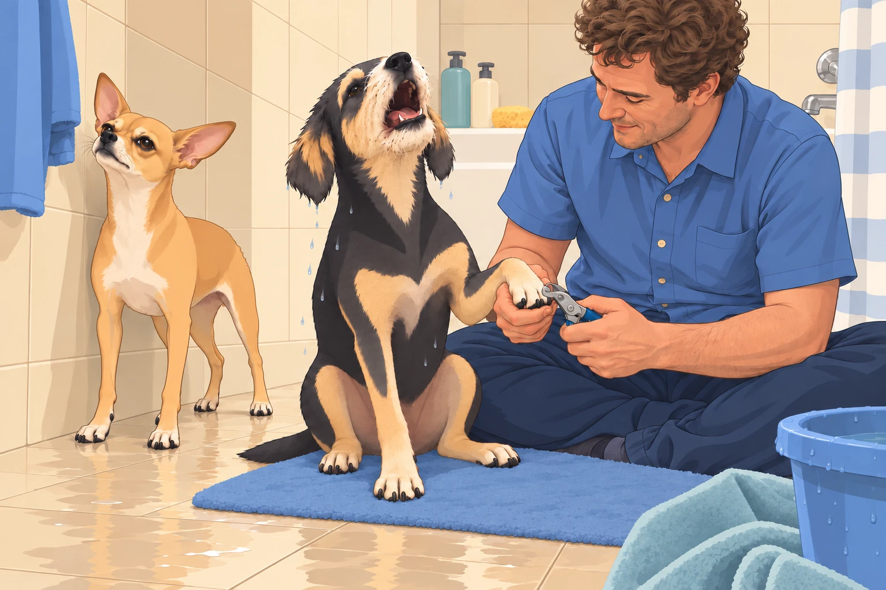
“BATH TIME IS A LIE,” Buddy barked between shrieks.
“You can’t cleanse what is already clean!” Neet yelped.
Eventually, they emerged, fluffy and furious, smelling like lavender oatmeal and betrayal.
Buddy shook before the towel arrived. Neet shook because Buddy had shaken. Their human closed his eyes as two separate showers reached him.
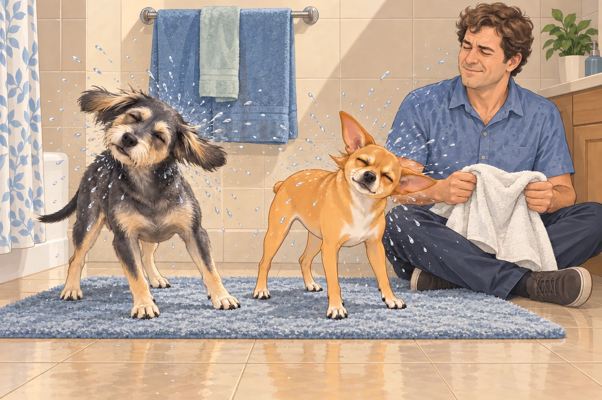
“Thank you,” he said, with remarkable composure.
He dried Buddy's beard first, then rubbed Neet's shoulders, taking his time when she leaned against his knee. The dogs regarded each other over opposite ends of the bath mat. They had survived. Their human had changed shirts.
Neet noticed him laying the towels over the radiator to dry. Buddy noticed her noticing.
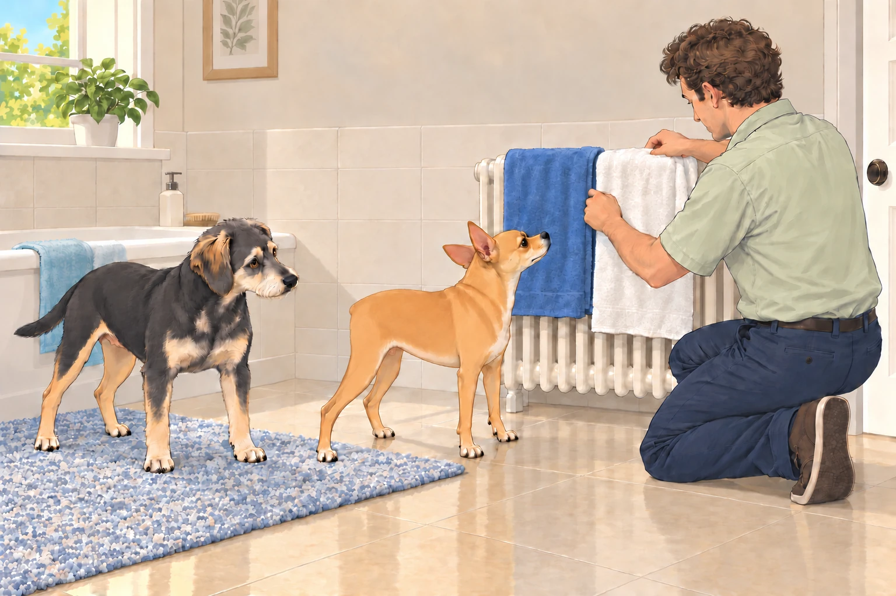
“What?”
“Nothing,” she said.
It was the tone she used when something was becoming a future operation.
Sunday: The Manager Strikes Back
The next evening, fresh from a squirrel chase and reeking of self-confidence, Neet and Buddy strutted into the building lobby— only to come face-to-face with The Manager.
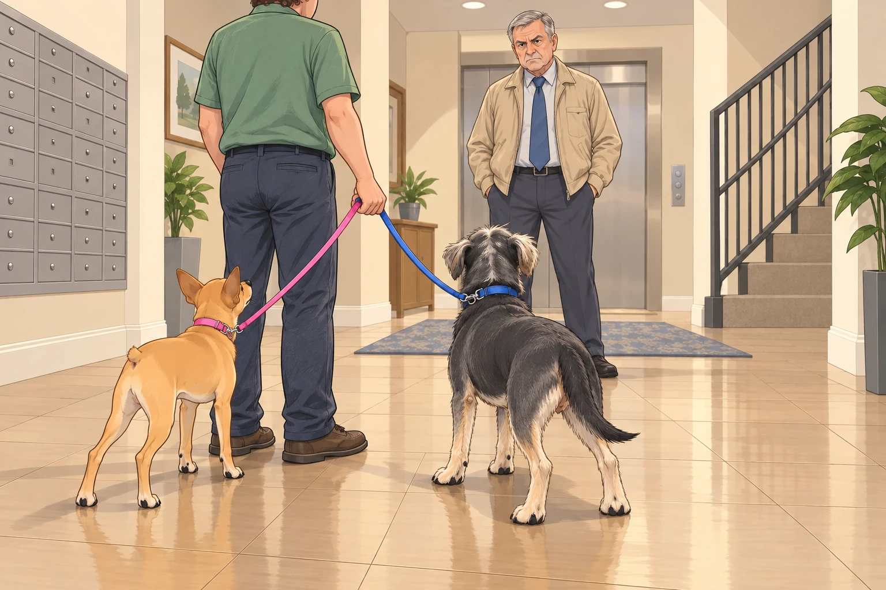
Mr. Grubbs. Beige windbreaker. Clip-on tie. The sort of man who could make a noticeboard look underdressed.
He narrowed his eyes at them like a border patrol agent at a suspiciously fluffy suitcase.
“You,” he said, pointing to Neet. “And you.” He jabbed toward Buddy. “There are two of you. This building has a strict one-dog-per-apartment policy.”
Their human tried to explain: “They’re small. Compact. Spiritually one dog.”
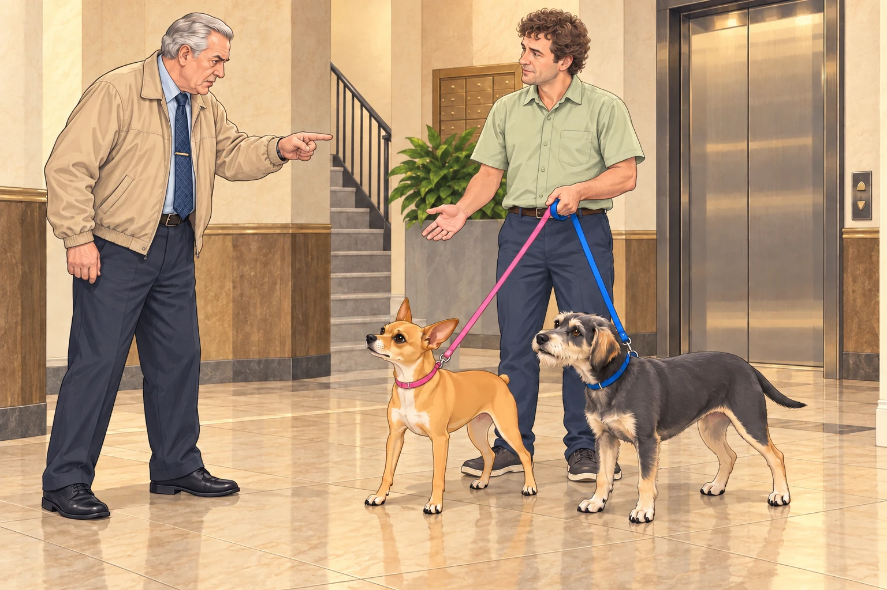
Grubbs was not moved. “Expect a notice.”
And he stormed off, muttering something about bylaws and chaos.
Neet Goes Underground
From that day forward, Neet became a fugitive. A shadow. A whisper.
When it was time for walks, Buddy would stroll out proudly, like the king of the world, while Neet clung to the shadows like she was in a Mission: Impossible movie. She refused the elevator. Too risky. She preferred the stairs— even if it meant dragging her leash up five flights like she was scaling Everest.
Buddy would wait at the bottom, staring blankly at the elevator doors.
“She’s doing the thing again,” he’d sigh.
The elevator opened. Empty. Buddy looked up the stairs and settled in for the slower dog-delivery service.
Their human kept one hand on Buddy's leash and waited with him, looking up each time paws tapped on the landing above.
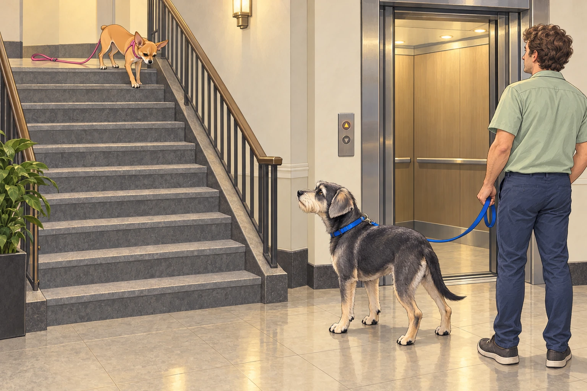
Neet would arrive, inspect the last corner and insist on inspecting it again. Buddy's tail sank a little farther with every extra inspection.
One evening, he brought her favorite small toy to the stairwell. She stopped halfway down.
“What's that doing here?”
“Encouraging you.”
“It could identify me.”
Buddy picked it up and waited. Neet came down to confiscate the evidence. They reached the grass a full minute sooner.
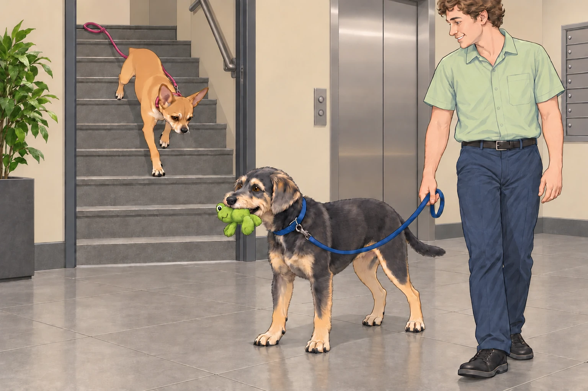
Buddy was pleased, but he didn't want to spend every walk abducting toys. He wanted the manager to understand that two dogs could share a bench without destroying civilization.
Neet even developed a full-on evasion routine. She’d peek around corners before walking. If she heard footsteps in the hall, she’d drop like a soldier under sniper fire and belly-crawl back inside. One time, she dove into a laundry basket on wheels and stayed there for fifteen minutes while the manager chatted with Mrs. Fernstein in the lobby.
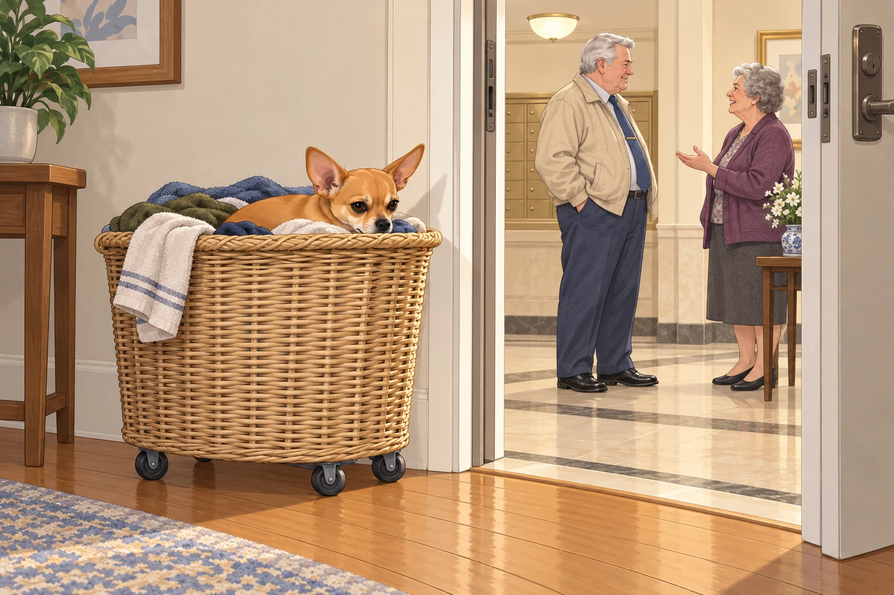
Buddy’s Attempt at Diplomacy
Buddy wanted to get back to taking walks together. He decided to try the greeting that worked on nearly everyone else: diplomacy.
He intercepted Mr. Grubbs one afternoon near the mailboxes and executed a flawless sit-paw-smile combo.
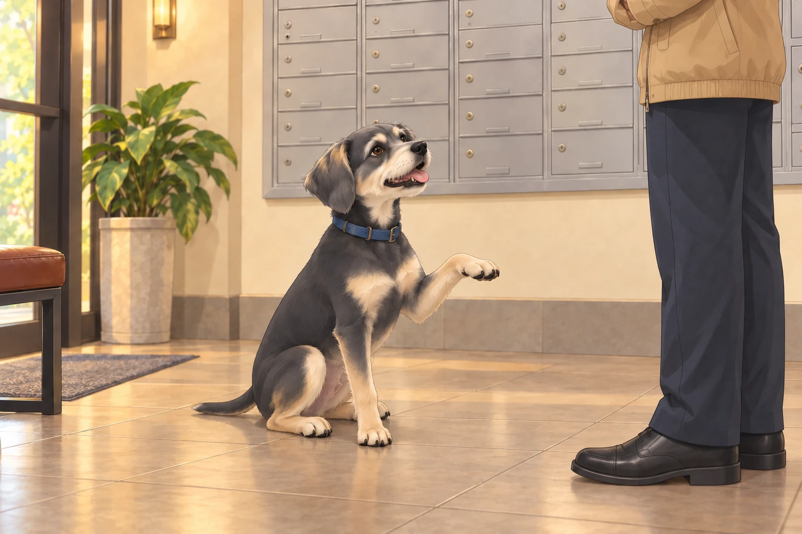
Grubbs scowled. “Nice try, mutt.”
Buddy peed on his shoe.
He kept the smile for a moment. Then, recognizing that the meeting had changed direction, he lowered his paw.
Their human apologized, took a cloth from the lobby cleaning station and dealt with the shoe. Buddy waited at his side. The smile had departed completely now.
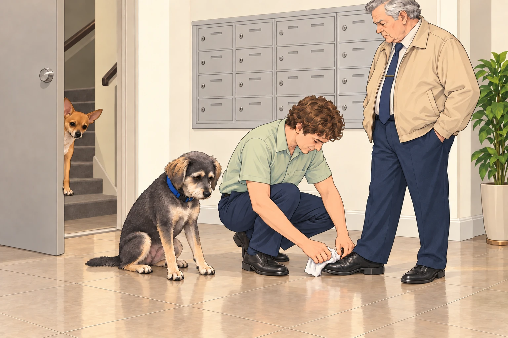
Grubbs stepped back, inspected the result and went away without accepting the paw.
Behind the stairwell door, Neet watched Buddy return.
“Did he agree?”
“Not in words.”
“Anything in writing?”
Buddy glanced at the cloth. “Something washable.”
Neet thought about that. Buddy lay down beside her, embarrassed enough to stop offering strategic advice for the rest of the afternoon. When she brought him the little toy, he put a paw over it and let her sit close.
The Letter of Doom
A week later, the official Notice arrived: “Violation of Pet Policy – Immediate Compliance Required.”
It was affixed to their door like a scarlet letter. Neet stared at it for three minutes straight, then began plotting.
She tried wearing sunglasses. “Maybe if he thinks I’m a different dog,” she whispered.
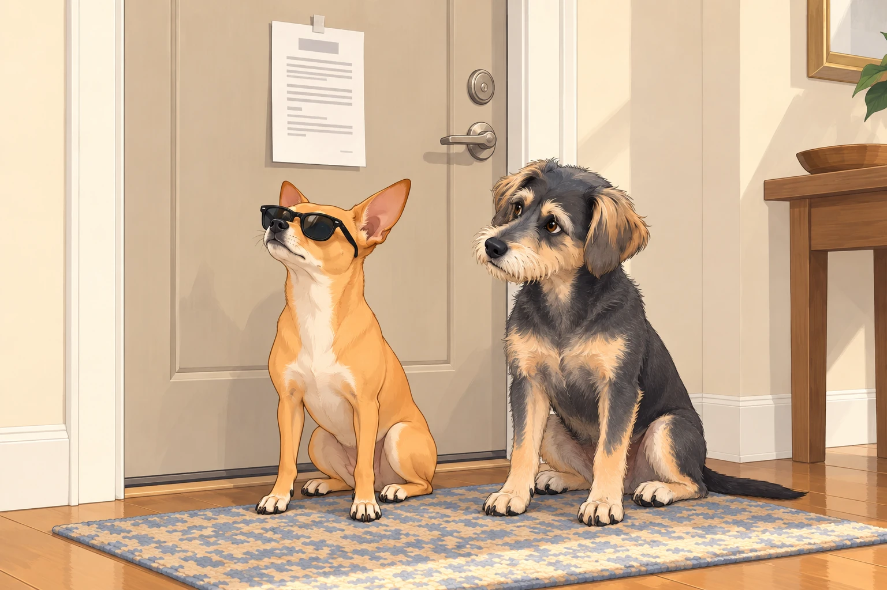
Buddy tried fitting Neet into his backpack. “We’ll say I’m a service dog. And you’re emotional support luggage.”
The backpack rehearsal took place on the rug. Buddy lowered himself while Neet examined the opening. She put in one paw, then withdrew it.
“There's a biscuit crumb.”
“That's provisions.”
She put her nose in. Buddy stood too soon, rolled the pack sideways and deposited the provisions on the carpet. Their human lifted it away before either dog could attempt a second boarding.
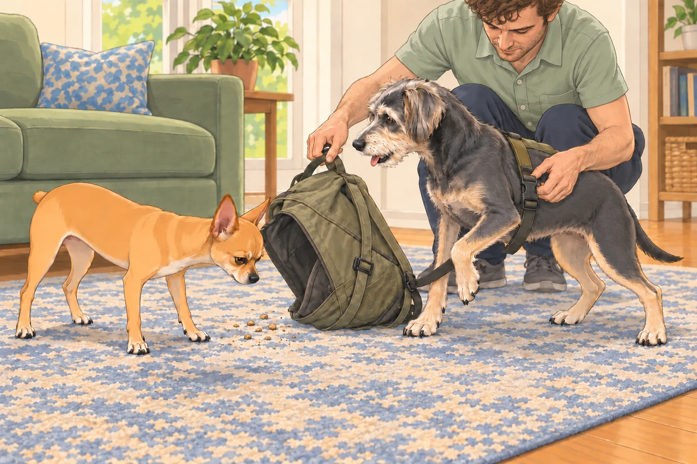
“Normal leashes,” he said, hanging the pack up. “Both of you.”
They even attempted synchronized walking— side by side, pretending to be a single, unusually wiggly dog— but this only drew more attention.
The synchronized walk got farther: three steps across the living room. Buddy took a fourth while Neet was still on her third. Their shoulders bumped; both corrected in opposite directions.
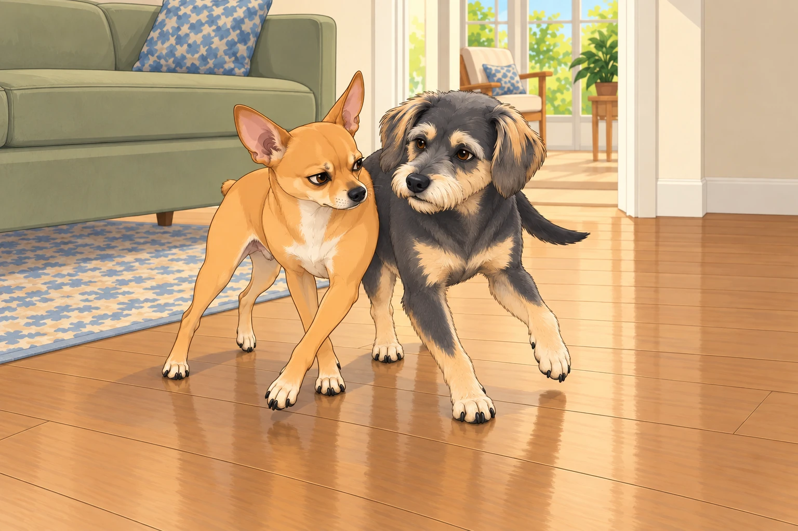
“One dog wouldn't do that,” Neet said.
“One dog would have fewer opinions.”
Outside the apartment, their human read the notice again, then carried it to the desk. The dogs heard paper drawers opening. Their schemes had reached the carpet; his might reach somebody who could answer.
The Great Stakeout
That Saturday, Neet orchestrated a full surveillance operation. She perched by the peephole for hours, logging every movement in the hallway.
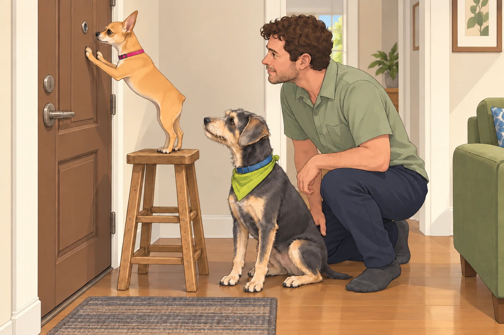
“Grubbs passed at 2:17pm. Holding envelope. Eyes darting. Possibly hunting. Confirm pattern.”
Buddy, wearing his “I’m Just Visiting” bandana, offered distractions. Barking at random walls. Knocking over plant pots in the hallway. Drawing suspicion to himself so Neet could sneak out unnoticed.
“I am the bait,” he whispered solemnly, tail wagging.
From cover, Neet watched him knock over a second pot.
“You can be less convincing.”
Buddy paused beside the spilled soil. He had meant to keep Grubbs looking at him while Neet passed the stairwell, but Mrs. Fernstein was looking too. So was their human.
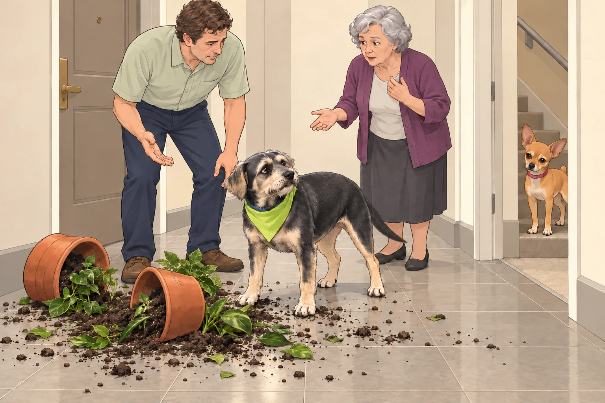
His bandana announced “I'm Just Visiting” above a very permanent mess.
The human asked the neighbor if the plant was damaged, righted the pot and fetched a brush. Buddy followed, suddenly eager to supervise responsible visiting.
Neet slipped out of her hiding place and reached the stairwell, then stopped. Buddy was still beside the brush.
“Come on,” she whispered.
He watched their human gather the soil. A dry leaf lay among the clumps. Buddy tried moving it with his nose and puffed it farther down the hallway.
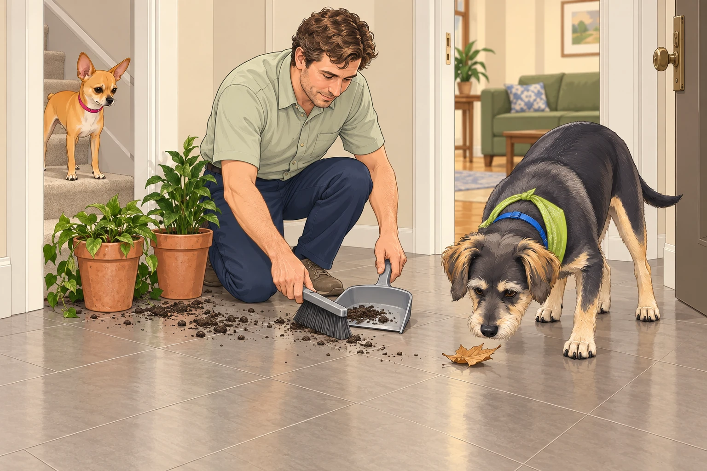
“I made this,” he said. “Wait.”
Neet waited at the door. It felt different from waiting for danger. She kept glancing back until the human had swept up the soil and clipped both leashes on.
Buddy trotted beside her. The leaf, lighter than the earth, had escaped the brush.
The Final Straw (That Was Actually a Leaf)
That afternoon, as they snuck back inside after their walk, Neet stepped on the crunchy leaf in the hallway. CRRRUNCH. Grubbs popped out of nowhere like a B-grade horror villain.
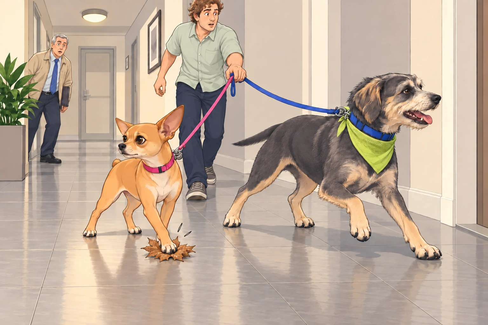
“Hey!”
Neet froze mid-step, eyes wide.
Buddy barked: “RUN!”
They took off, leash flying, tail fur on fire, careening down the hall and into their apartment. Their human got both dogs inside, shut the door and worked through all four bolts. Buddy stayed clear of the leash while Neet listened for footsteps.
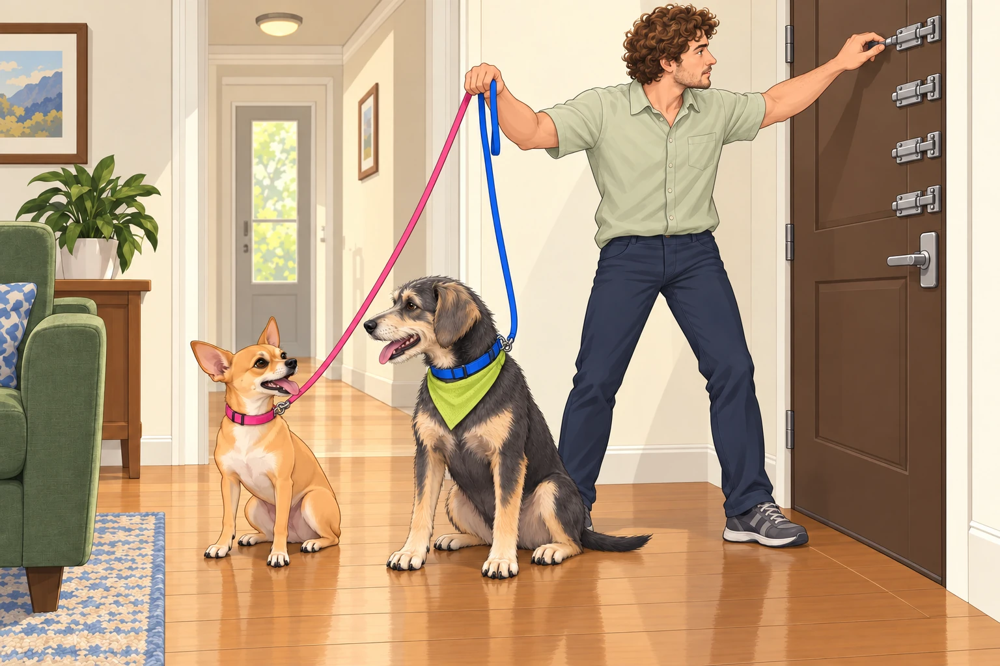
They sat in silence. Panting. Eyes wide.
“Okay,” Neet said. “New plan.”
Buddy looked toward the door. “Does it involve sweeping?”
Neet opened her mouth, then looked at his bandana. It had a fleck of soil caught beneath the knot.
“Possibly.”
Their human unfastened both leashes, set them on the hook and checked the dogs before returning to the door. He listened once, then fetched the brush.
Buddy went with him. Neet followed as far as the threshold.
The hallway was empty. The crushed leaf lay where it had betrayed them. Buddy watched the brush collect it and escort it into the dustpan.
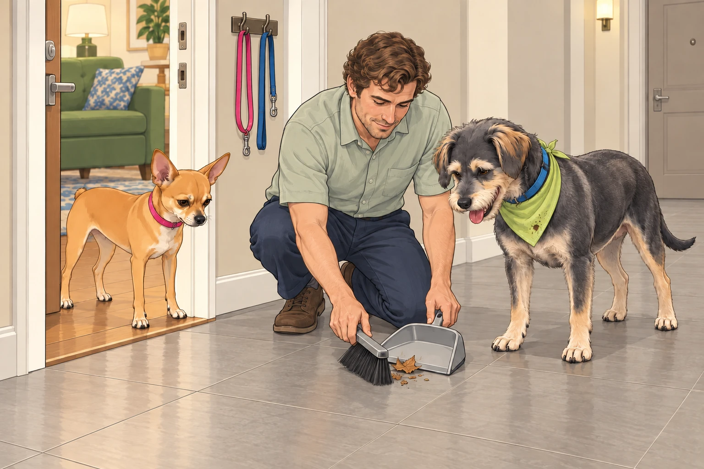
“Captured,” Neet whispered.
Buddy stepped into the hall beside her. “This is a much better plan.”
They both stayed with their human while he checked the remaining corners. No Grubbs emerged from any of them. Back inside, Buddy put his head on Neet's shoulder for a moment before she resumed command.
Operation: Legal Loophole
By Monday, their human had contacted the building’s HOA with a polite but firm email: “Technically, they share a food bowl. Emotionally, they’re one dog.”
Pending review.
Their human kept a copy of the message beside the notice. Then he checked the clock, picked up both leashes and held them out.
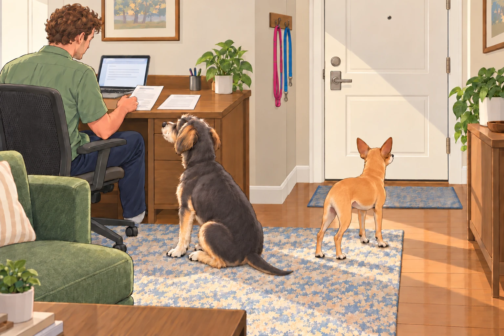
Buddy stood immediately. Neet checked the gap under the door.
“Together,” the human said gently.
She let him fasten the clip. Buddy waited without the toy this time. Downstairs, she still inspected the turn, but only once. At Greenwood Park, Riley was near the bench again. Buddy chose the unoccupied end and left room beside him.
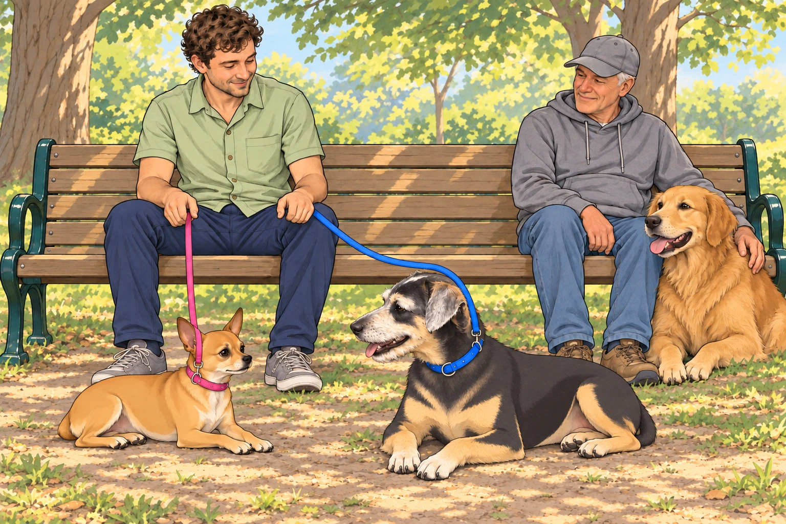
Neet stepped into that room.
The notice had not vanished, and neither had the manager. For the length of one good sniff beneath one familiar bench, they had something else to think about.
Until then, Neet remains on high alert. The towels for Spa Day have been hidden under the couch. The staircase route is now marked with escape plans. And Buddy?
He’s been practicing his innocent face. Just in case.
He holds the expression while Neet tests the hiding place beneath the couch. She has left just enough room for the towels.
Their human reaches down for one. A paw draws it farther into the darkness.
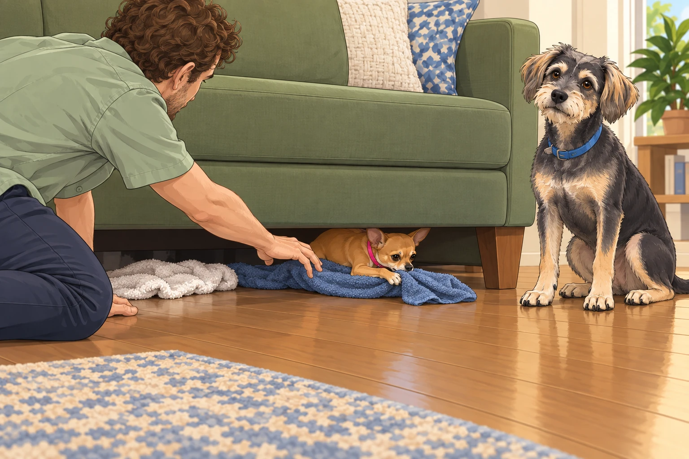
Buddy makes his face even more innocent.
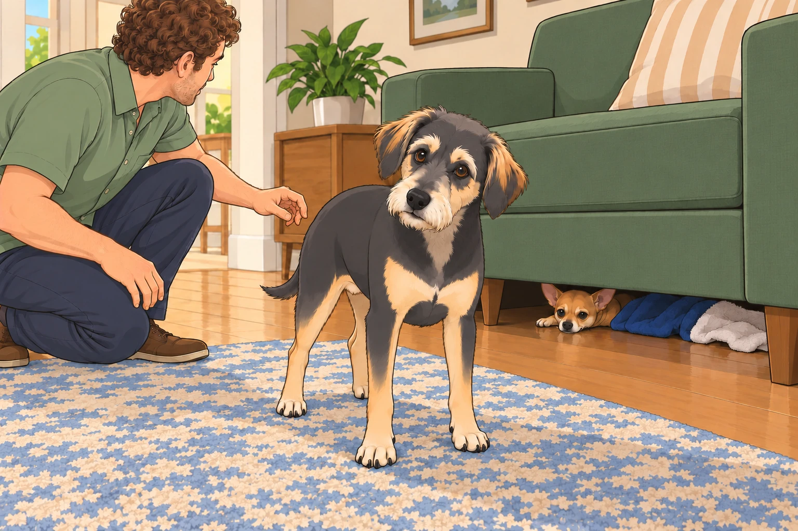